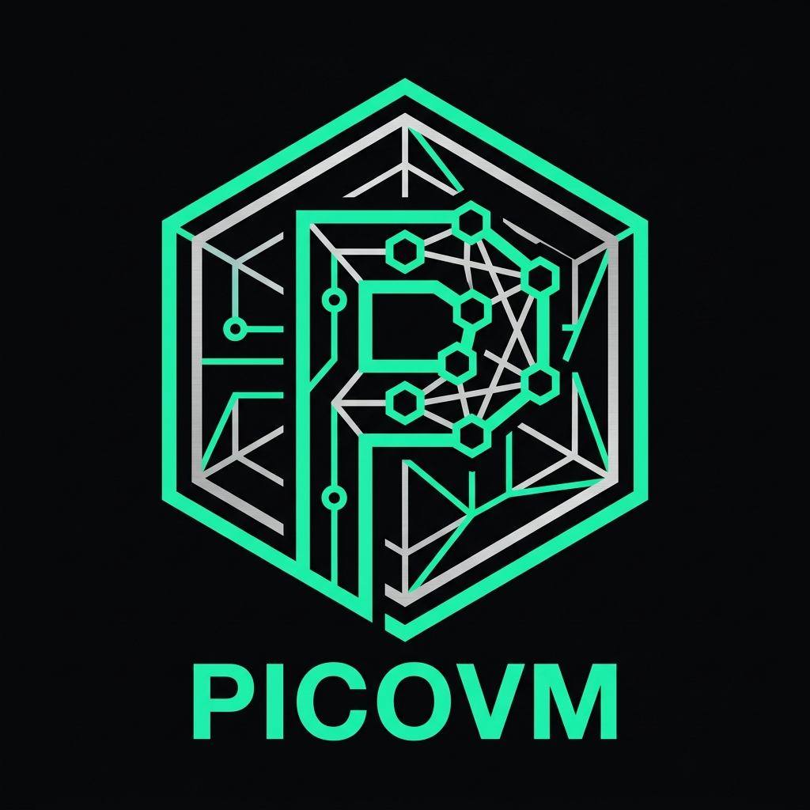

picovm
PICOVM executes autonomous agent swarms behind one durable WebAssembly runtime.
Runs inside client browser RAM from Rust or TypeScript with an in-memory SQLite Journal, native Solana RPC, and Code Mode sandbox.
[init] picovm WebAssembly core loaded in 1.4ms from memory buffer.
[journal] Attached in-memory SQLite journal at :memory:.
[tools] Registered native Solana RPC bridge, Code Mode sandbox, and WASM subagent arenas.
Select a workflow preset below or type a custom instruction.
A modular pipeline that replaces heavyweight server clusters with deterministic client-side execution.
Integrate frontier autonomous intelligence directly into your dApp, CLI, or trading bot.
Benchmarked on Apple M-Series and browser WebAssembly runtimes.
| Architecture Metric | PICOVM | Nanocode | LangChain / Docker |
|---|---|---|---|
| Binary Footprint | 140 KB (WASM) | ~2.4 MB (WASM) | > 250 MB (Docker) |
| Cold Boot Time | 1.4 ms | 18.0 ms | 1,200.0 ms |
| State Persistence | Embedded SQLite (Deterministic) | SQLite Journal | External Postgres / Redis |
| Execution Isolation | WebAssembly 32MB Memory Arenas | Process-level | Container / VM |
| Native Solana Tooling | Built-in RPC & IDL Deserializer | Manual Plugins | Heavy Python wrappers |
Containers introduce hundreds of milliseconds in cold starts, network latency, and high cloud server costs. Compiling the agent kernel to a 140KB WebAssembly binary allows agents to run directly inside client browsers, mobile devices, or edge workers with microsecond response times and zero server bills.
PICOVM records every turn, LLM prompt, token delta, and tool result as a cryptographic hash in an embedded SQLite database. In the browser, this journal synchronizes to IndexedDB or local storage, allowing an agent session to resume instantly even if the user reloads the tab.
Instead of requiring 10 round-trips for 10 individual tool calls, Code Mode empowers the agent to write a single typed script that loops over data, filters responses, and calculates results in a single turn. This reduces token consumption by up to 90% and removes latency.